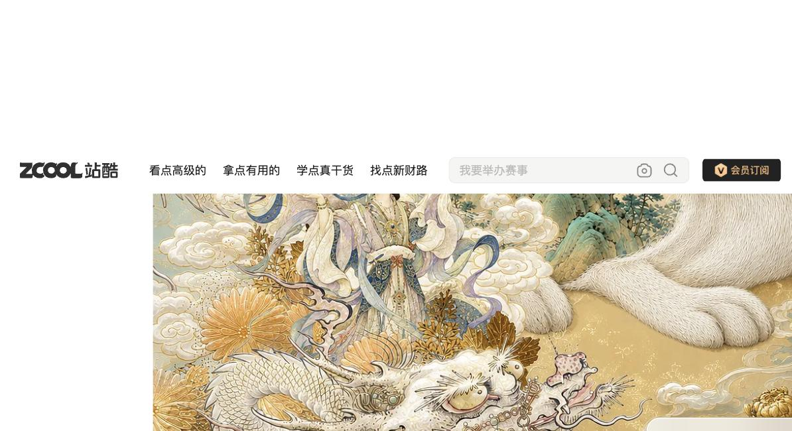
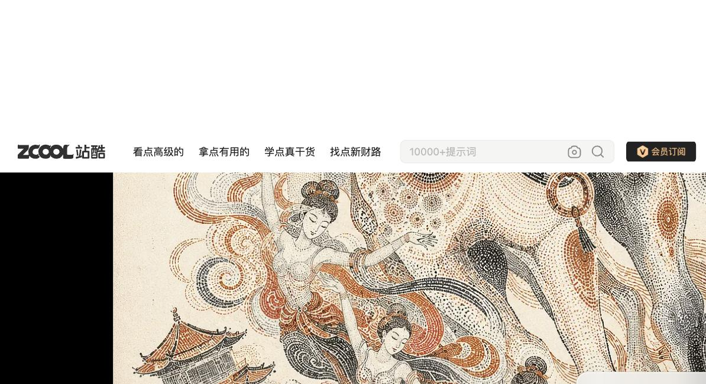
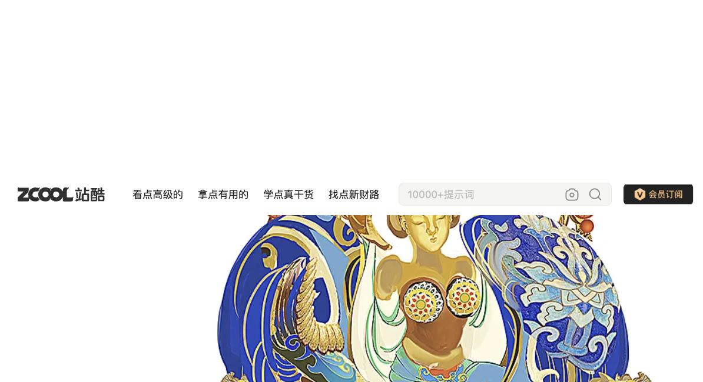
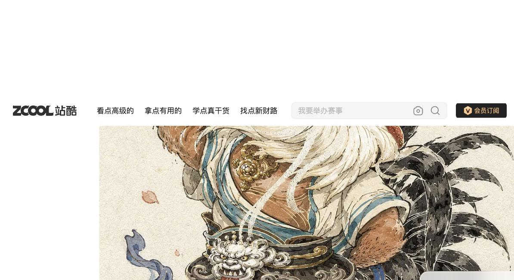
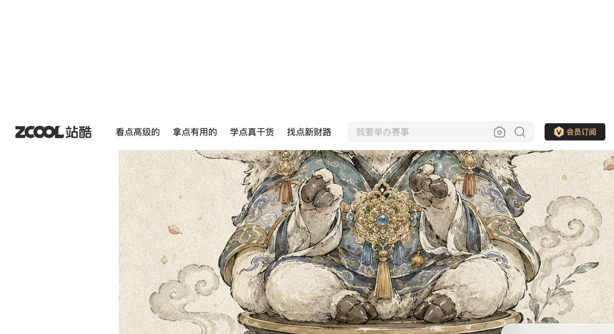
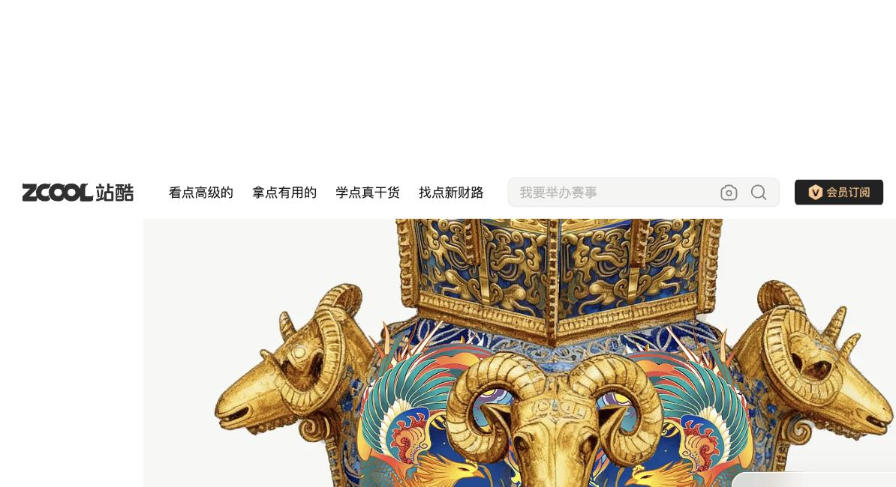
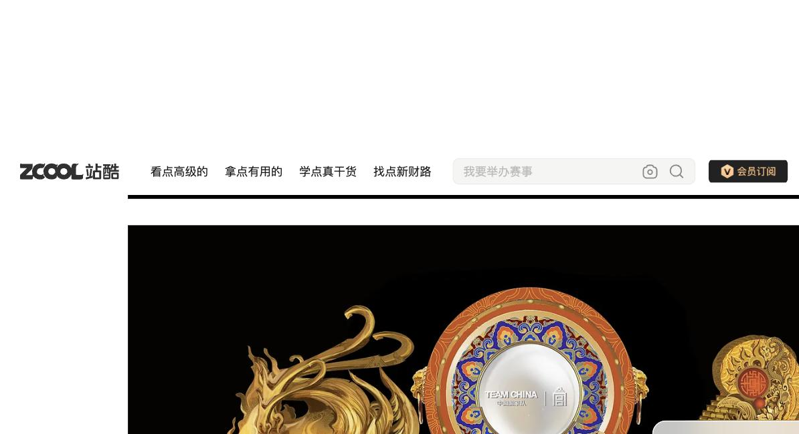
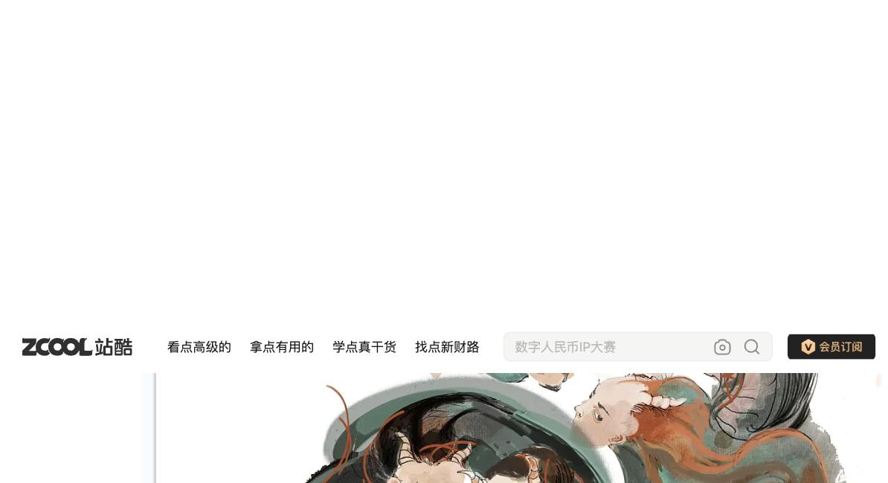
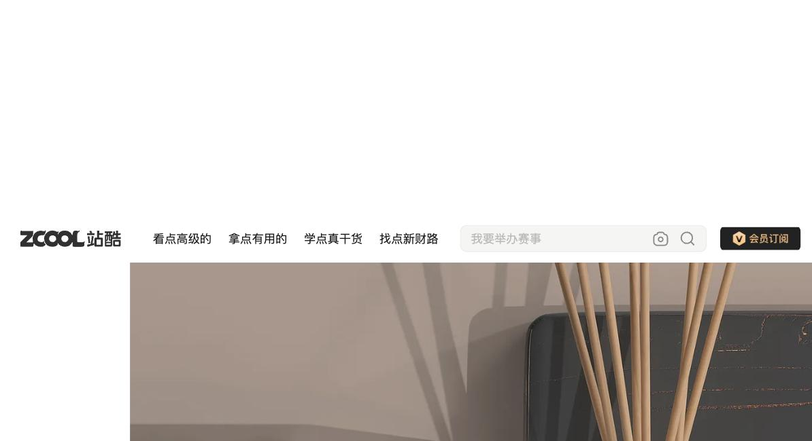

Staged narrative scene
hjx_01, 02, 09
Illustration · Character/IP · Cultural Craft · Beijing · ZCOOL
寒江雪的插画
Han Jiang Xue Illustration — zcool.com.cn/u/ZMzY4MTA2NA==
Richly ornamented illustration that treats zodiac and mythical animals with the dignity of imperial court figures — gold-accented, densely decorated, and equally comfortable in award-winning fine illustration or clean commercial product photography.
1 Visual DNA
Gold-accented densityAnimals-in-imperial-regaliaOrnate framing
Cloisonné / gongbi craftDual illustration+product design
2 Portfolio Evidence
10 sampled cover images, acquired 2026-08-22 via anonymous browser session (no login, no WAF evasion), spanning toy/IP, commercial illustration, Chinese cultural illustration, craft reinterpretation, and packaging.










3 Color Language
Gold as a consistent premium accent across 6 of 10 works, regardless of otherwise-different technique. Saturated cloisonné blue pairs with gold in the craft-reinterpretation pieces. Swatches are approximate visual reads, not claimed production colors.
gold accent (6 works)
cloisonné blue (04,07)
terracotta/ochre (02,03)
charcoal (10, product photo)
4 Typography
Theatrical staged type
English display type ("DUO CONCERT") inside an ornate curtain-and-gold-border frame.
hjx_01
Seal-stamp title graphic
Title rendered as a weathered red ink-stamp mark rather than a plain typeface.
hjx_09
5 Composition
Generated diagram — composition modes across the 10 works, not a source image
Single-figure centered portrait
hjx_04, 05, 06, 07
hjx_04, 05, 06, 07
Plain product-photo staging
hjx_10
hjx_10
6 Shape & Graphic Language
Ornate decorative framing recurs around the central figure — curtain/stage border, circular medallion, patterned plate edge (hjx_01, 04, 08). Below: a generated abstraction of the recurring circular-medallion framing device, not a source image.
central figure
(cloisonné-style circular frame)
(cloisonné-style circular frame)
7 Imagery / Illustration
Technique range is wide and deliberate: meticulous gongbi fine linework (hjx_02), Dunhuang-inspired stipple/pointillism (hjx_03, single instance), cloisonné/enamel-craft rendering (hjx_04, 07), watercolor-ink character illustration (hjx_05, 06), and looser ink-wash brushwork (hjx_09) — plus a separate, distinct competency in real product photography (hjx_10). Decorative density is uniformly high across illustration works.
7b Character / IP & Cultural-Product Language
- Character/IP language: zodiac/regional animals personified as dignified characters, not generic mascots (01, 05, 06).
- Facial/body stylization: soft, rounded, large-eyed, gentle rather than fierce — even for guardian creatures (01, 05, 06).
- Traditional motifs: dragon, phoenix, cloud, wave, crane patterns recur (02, 04, 07, 08).
- Decorative density: high across nearly the entire illustrated sample, not an occasional flourish.
- Narrative composition: staged scenes (stage, mythological gathering, festival tableau) appear more often than plain portraits alone.
- Pattern/textile translation: cloisonné and gongbi surface patterns read as textile/embroidery-like decoration (02, 04, 07).
- Toy/cultural-product translation: the same personification-in-regalia vocabulary transfers across poster, toy-concept, and museum-grade commemorative object.
8 Signature Elements
Gold accent cue HIGH
Gold linework/jewelry/vessel color across different techniques.
02,04,05,06,07,08 (6)
Animals in imperial regalia HIGH
Robes, jeweled pendants, ceremonial dignity, not generic mascot treatment.
01,05,06 (3)
Ornate decorative framing HIGH
Curtain/stage, circular medallion, or patterned border around the central figure.
01,04,08 (3)
Cloisonné/enamel craft rendering MEDIUM
Gold cell-outline + saturated color fill for artifact reinterpretation.
04,07 (2)
Dual illustration+product design HIGH (methodology)
Illustration dominant, real product photography a demonstrated separate discipline.
all 10
Dunhuang stipple technique LOW
Terracotta pointillist rendering evoking cave-fresco texture.
03 only
Loose ink-wash register LOW
Looser brushwork for a mythological group scene.
09 only
9 Do / Don't
Do
- Default to gold accenting for premium/cultural character or object work
- Give personified animals imperial-court regalia and gentle, rounded expressions
- Use ornate framing for hero/portrait pieces
- Apply cloisonné-style rendering for heritage-artifact briefs specifically
- Treat product photography as a legitimate separate discipline
Don't
- Assume one fixed illustration technique — at least 4 distinct styles observed
- Over-claim the stipple (§8) or ink-wash (§8) register as stable — each is 1 work
- Assume the toy/plush concept pieces are photos of real manufactured products — they are illustrated concept designs
10 Agent Design Guide
For a downstream generation agent
- Decide whether the brief calls for a character/IP treatment or a product-photography treatment — both are real, evidenced competencies.
- For character work, personify the subject with imperial-court-style regalia (robe, jeweled pendant) and a gentle, rounded, large-eyed expression.
- Default to gold as the unifying premium accent, regardless of which specific rendering technique is chosen.
- For heritage-artifact or museum-collaboration briefs, use cloisonné-style gold-outline + saturated-fill rendering.
- Use ornate framing (curtain, medallion, patterned border) for hero/portrait compositions; skip it for scene-based or product-photo work.
- Do not force one signature illustration style — choose the technique (gongbi, stipple, cloisonné, ink-wash) that fits the brief's specific cultural reference.
11 Evidence / Confidence
| Element | Work IDs | Confidence |
|---|---|---|
| Gold accent cue | 02,04,05,06,07,08 | HIGH (6) |
| Animals in imperial regalia | 01,05,06 | HIGH (3) |
| Ornate decorative framing | 01,04,08 | HIGH (3) |
| Cloisonné/enamel rendering | 04,07 | MEDIUM (2) |
| Dual illustration+product design | all 10 | HIGH (methodology) |
| Dunhuang stipple technique | 03 | LOW (1) |
| Loose ink-wash register | 09 | LOW (1) |
Full evidence: PERSONAL_DESIGN_SYSTEM.md.